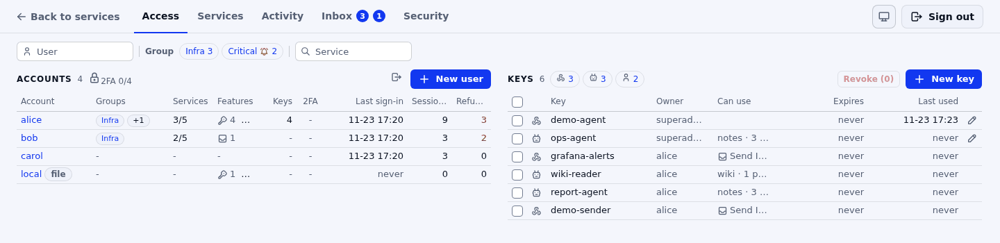
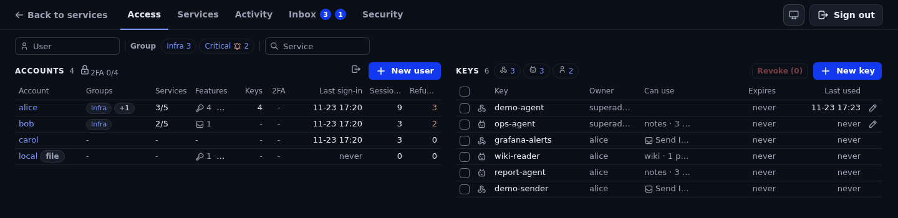
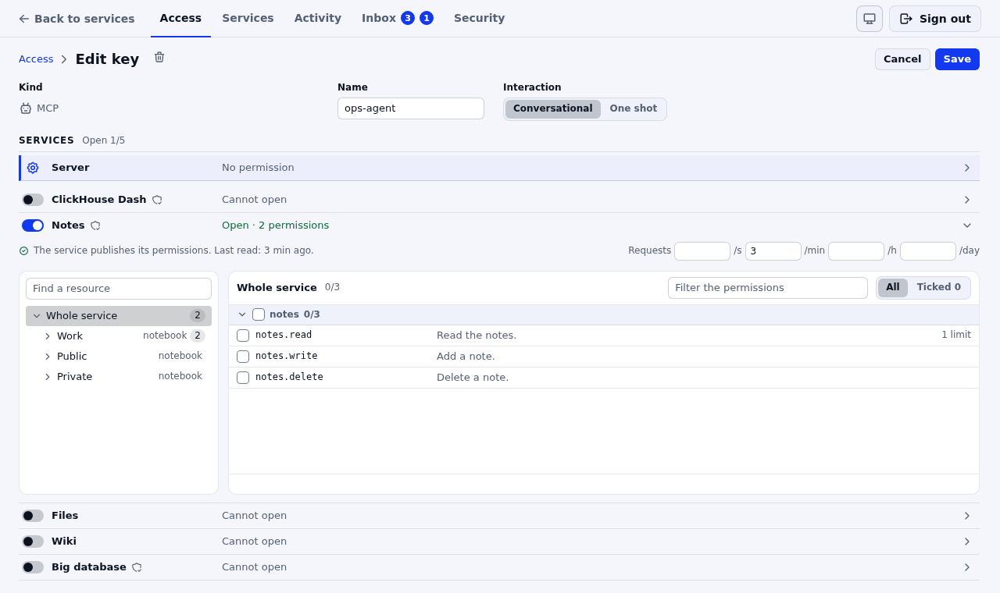
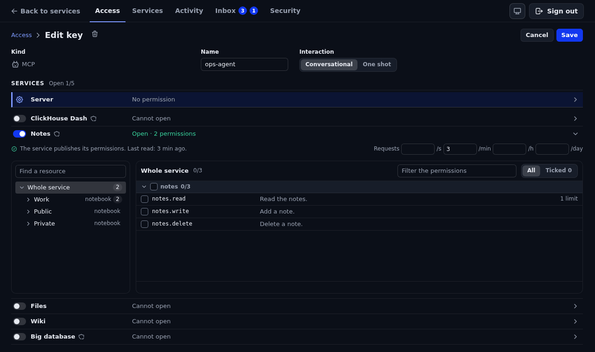
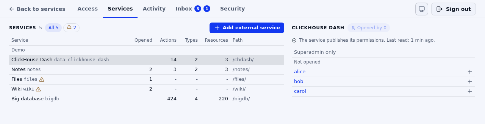
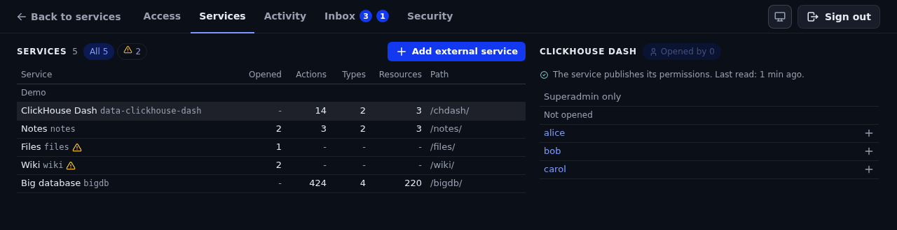
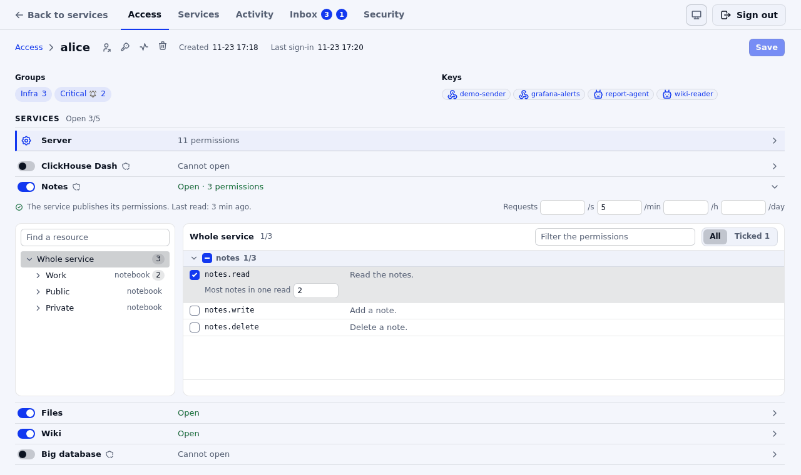
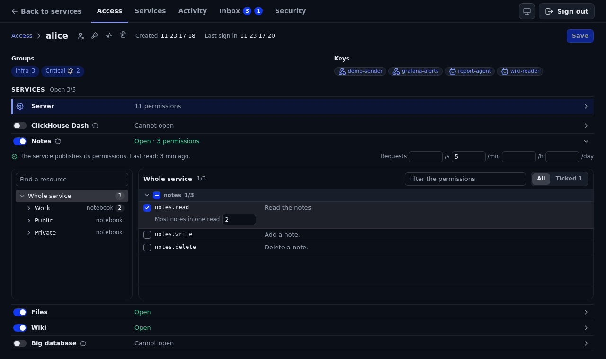
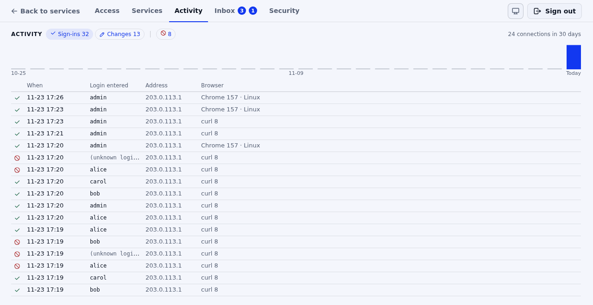
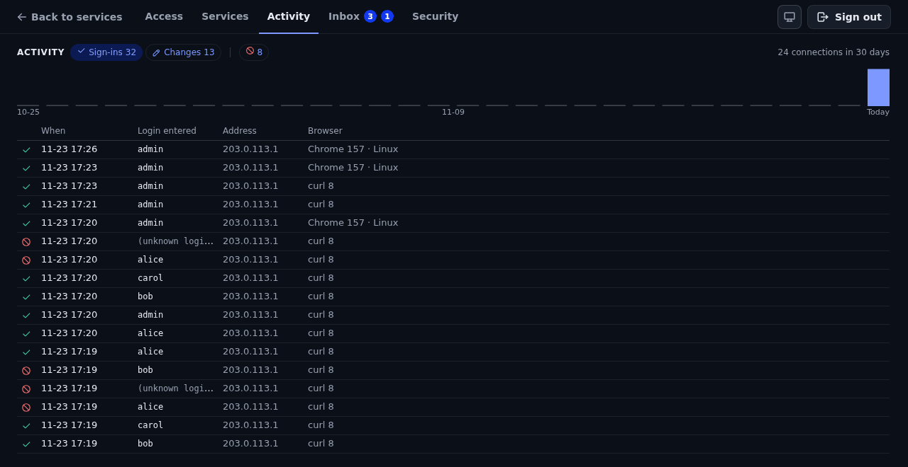

Layout of the pages
The superadmin gets a gear on the launcher. The gear opens the settings. The settings are one HTML page for each tab. They live under /auth/settings. Traefik already routes /auth/ to the portal.
- Each page has one header row of 48 px. The row has Back to services at the left and the tabs next to it. The theme selector and the sign-out button stand at the right.
- The row never wraps. In a narrow window, only the strip of the tabs scrolls sideways, with a thin bar that stays visible.
- The tabs are Access, Services, Activity and Inbox. A tab shows only when its feature is on. A tab that the file disables is absent from the page. It is never grey. A page with one tab only has no strip.
- A time shows with no year when it is in the current year.
- The pages work without script, with one exception: the script draws the editor of grants and the matrices. Without script, the pages list the grants as text.
- The pages answer 404 to anyone who is not the superadmin in its own right. This applies to a user, and to the superadmin who browses as a user. The exceptions are the tabs Access and Inbox, which an account opens with its own permissions.
- A page carries only what it shows. The launcher carries none of it. The settings stylesheet loads on the settings pages only.
- The first element of each page is a skip link to the content.
The header stays at the top. The page does not scroll at 1440x900 and at 1280x720. A long list scrolls in its own panel. No element has a maximum width: each page uses the whole window. The page Security is the exception: it has a column of 680 px.
Other rules of the layout:
- Two panels stand side by side from 1200 px, and stack under it. A panel has a small title, a count and its controls.
- A chip with a count filters the list of its panel. A chip is a link with a query parameter, so it works without script. A chip with a count of zero is absent.
- A state is one icon with a name for a screen reader.
- A row is one line of 26 px.
- A time shows in the time zone of the browser, with the UTC time in its title.
- A control is a flat icon. A confirmation opens in the place of its button.
- A popover opens from an icon. It closes on a click outside and on the key Escape.
The tabs
Access
The tab Access (/auth/settings) has two lists: the accounts and the keys. The superadmin sees both. An account with a right of the keys sees the list of keys alone, and the page has no strip.
The list of accounts
- The superadmin is not a row of the list. A row shows the login, which is a link to the page of the account.
- The row shows the groups of the account as small chips: two chips, then a chip "+N" that opens the list of all of them. A group chip is a link that filters by this group.
- The row shows the services that the account opens ("2 of 5"). Then come the features with their rights (an icon and a count) and the keys.
- The last columns are the last sign-in, the sessions and the refused sign-ins of the last 30 days.
- For the superadmin, a column 2FA shows which accounts have a second factor. The head shows the count, for example 1/2. The column is absent when
authentication.mfaisoffor when the database read fails. - An account of the file has the badge
file. - The column Groups exists only with the block
inbox. The columns of the features and of the keys exist only with the blockkeysor the blockinbox. With neither block, the column Opens shows the services of each account as chips. - No column hides at a small width.
- The head of the accounts has End all sessions and New user.
- End all sessions asks for a confirmation in place, and your own session ends too.
- New user is a link to the page "New user". It is absent when
users.allow_creationisfalseor whenaccess.grants_modeisstatic.
The list of keys
- The list has the chips of the kinds, the chip "mine" and Revoke (N).
- A chip of a kind shows only when the list holds the two kinds. A chip keeps its place when a filter leaves no key for it: it is dimmed and it is not a link.
- Revoke (0) does nothing, also with the keyboard. A key has a box when you may revoke it. Revoke (N) asks for a confirmation in place.
- New key is a link to the page "New key". It is absent when the account may make no kind of key.
- The column Owner and the chip "mine" exist only when the account sees the keys of other accounts.
From 1400 px the two lists stand side by side. Under 1400 px they stack and share the height of the window.


Filters of the Access tab
One row under the header has the filters.
- The field User keeps one account.
- The chips Group are links: one chip for each group of the block
inbox, with its member count. - The field Service keeps one service. It shows the name of the service and accepts the name or the id.
- The URL carries the filters:
?user=&group=&service=. The form uses the method GET, so the page works without script. - All the filters apply together. Each active filter shows as a chip with a cross, and Clear removes them all.
- The head of a list shows "N of M". A list with no row says so and has a link Clear.
| Filter | Accounts | Keys |
|---|---|---|
user | The account. | The keys that the account owns. |
group | The members: the accounts that hold inbox.receive on the group. | The keys with a grant on the group. |
service | The accounts that open the service. The column Permissions shows how many permissions each account has on it. | The keys with a grant on the service. |
A value that names nothing gives an empty list. It never gives an error. A filter on a group and a service together gives no key. The chips of the kinds count the keys that the filters keep. The bar is for the superadmin. The panel-only page has no filter by group.
Services


The tab Services (/auth/settings/services) has one table that lists the services by group.
- Each row shows the name, the id and the path. It also shows the number of paths open without a session and the accounts that have
access. The last columns give the number of actions, of resource types and of resources. - A service whose action document cannot be read has a warning icon.
- A click on a row selects it, with a link (
?svc=<id>). The panel Opened by shows the accounts that open the selected service, with their number of grants. It then shows the accounts that do not open it. - Each account that does not open the service has a plus link that gives access. The link is the address
/auth/settings/give?user=<login>&service=<id>. It redirects to the page of the account, with the service open in the editor and the grantaccessticked. The page saves nothing until the person clicks Save. - The chips All and Services to check filter the table (
?f=check). They are absent when no service needs a check. The selected service is always a row of the filtered table. - Above the panel, a line says where the document of the service comes from and how old the copy is. It gives the reason of the last failed read. The editor of grants shows the same line.
- The panel To check lists the grants that the document of the selected service does not declare. Each line has the account (a link), the grant and the problem.
- A document that the portal cannot read is one more line. The panel is absent when there is none.
- The page of one service does not exist: its route answers 404. This page has no filter by user, group or service.
- The button Add external service opens a small form with a name, a link, a description and an icon. See External services.
- An external service has the badge
externaland a dash in the columns of the actions, the types and the resources. A service of the file also has the badgefile. Its panel shows the description and says "External link. This server does not protect it." The panel has a trash icon, except for a service of the file.


Activity
The tab Activity (/auth/settings/activity) has one list with two views, with the chips Sign-ins and Changes.
- The chip Refused keeps the refused sign-ins (
?r=failed). The chip Changes shows the audit events (?v=changes). - Above the list, a graph shows the connections of 30 days. Under it, three marks give the first day, the middle day and today, in UTC.
- The two views list the same 30 days, and each chip counts the rows of its list.
- A list holds 1000 rows at most, and a line says when it is cut.
- Each line of the sign-ins shows the result, the time, the login as typed, the address and the browser.
- Each line of the changes shows the time, the change, the account and who did it.
- The list marks a session that the person kept with the badge
kept, and a session of the second factor with the badge2fa.


Inbox
The tab Inbox (/auth/settings/inbox) shows only when the file has the block inbox and the account has a permission of the Inbox. See Inbox.
Security
The page Security (/auth/settings/security) is the page of one account. It has the second factor of the account. See Authentication and sessions.
Who sees which tab
An account that is not the superadmin sees the tabs Access and Inbox only, and only the ones that it may open.
- The tab Access needs a right to read keys.
- The code builds the list of tabs from three facts. The viewer is the superadmin, or not. The viewer may read keys, or not. The viewer has a permission of the Inbox, or not.
- The launcher has no tile for the Inbox: the Inbox is a feature of the portal, as the keys are.
- The superadmin opens the pages with the gear. An account that may read keys, or that has a permission of the Inbox, gets the gear too. The gear links to the first tab of the account.
- A form of an account returns to the page of the account, or to the editor of the service, with the outcome in a notice. The notice is one code from a fixed list (
?s=<code>). The address never carries text.
Child pages
Five child pages fill the whole window. The tab Access stays marked on each of them. Each has the same head: a crumb Access >, the title, Cancel at the right and the primary button. The address /auth/keys does not exist: the list of keys is in the tab Access.
Page of an account
The address is /auth/settings/users/<login>.
- One row of tools has the way back, the login and the button Log in as (see Impersonation). It also has Change the password, a popover with the field and Generate.
- Next come Activity of the account and Delete. Activity of the account is a popover with the figures, the graph, the latest sessions and the services used.
- The row ends with the dates of creation and of the last sign-in, and Save. Save is grey until a grant changes.
- Delete opens in place and names the keys that go with the account: "Delete carol and 3 keys?". An account that has keys asks for its login before it deletes.
- Under the row, one field has the groups of the account as chips. Another field has the keys of the account as chips: four chips, then "+N".
- A group chip writes the grant
inbox.receiveon its group. The column Receive of the Inbox matrix shows the same grant, and the two always agree. A key chip opens the list of the keys of the account. - Under the chips, the groups Services and Server permissions stand side by side. The editor of grants draws them (see Editor of grants). The address
?service=<id>opens a service in the group Services. - One form sends every grant. A new password ends the sessions of the account at once.
- In the mode
static, the page has no form and the group chips are links. In the modehybrid, a grant of the configuration has a lock and cannot change. - The page of an account of the file shows its grants with a lock, and it changes nothing.
- The page of the superadmin shows its activity only. The superadmin has every grant, and the configuration file gives its login and password.
- The Generate button fills a password field with a random password of 20 characters. The browser draws this password. The password is never sent anywhere before the form is submitted.
New user
The address is /auth/settings/new-user.
- One row has the fields Login, Password (with Generate) and Groups. The editor of grants fills the rest of the window.
- Create makes the account with its grants in one request, and the portal opens the page of the new account. A new account has no grant until a grant is ticked.
- The route answers 404 when
users.allow_creationisfalse. - A refused try returns to this page. The message shows under the field that it names, and a banner says that the account is not made.
- A right on a service whose
accessswitch is not ticked gives the page again with status 422. The page keeps the login and the ticked grants, and the banner names the service. The page does not fill the password field again. - Without script, the page has three empty rows for grants.
New key and edit key
The address of the page "New key" is /auth/keys/new.
- One row has the fields Kind (API or MCP), Name and Expires. With one kind that the account may make, the field Kind is absent.
- A right on a service whose
accessswitch is not ticked gives the page again with status 422. The page keeps the name and the grants, and the banner names the service. - An MCP key shows the editor of the services on the whole width.
- An API key shows the Inbox matrix and the row Direct alerts on the left. The row Direct alerts shows only when the document of the portal has the action
alert.send_user. - On the right, an aside lists the calls of the API that the ticked rights allow. The aside needs script.
- Create shows the page "Key made" with the text of the key one time. The page has Copy and Done, and the answer has the header
Cache-Control: no-store.
The address of the page "Edit key" is /auth/keys/edit?id=<id>. The page is like "New key". The kind is a fact and does not change. A right that the owner lost shows the note "no effect: the owner does not hold it any more". A trash icon revokes the key, with a confirmation in place.
Panel-only mode and the switches
The portal can run as a panel of services only. Each part that is off is absent from the pages. It is never grey. A route that is off answers 404.
| Switch | Default | When off or absent |
|---|---|---|
Block inbox | absent | No tab Inbox, no routes /v1/*, /api/v1/*, /api/version, no phone endpoint, no group of Inbox permissions, no kind api. |
Block keys | absent | No list of keys, no New key, no page of a key, no group of key permissions, no key count in the list of accounts. |
keys.mcp | true | The key edge refuses mcp_ keys. No MCP chip, no MCP right. |
keys.api | false | The API of the Inbox refuses api_ keys. No API chip, no API right. |
users.allow_creation | true | The create route answers 404. No New user button. The accounts that exist stay editable. |
Block identity, block pdp | absent | No identity token and no AuthZEN PDP. The kind mcp needs both. |
A file with no block keys, no block inbox and users.allow_creation = false shows three tabs: Access, Services and Activity. The tab Access has the list of accounts alone, with the column Opens. It has no New user, no column of features, no column of keys and no filter by group.
Six contradictions stop the program at start. The error names the key, the expected value and the value found:
keys.api = trueand no blockinbox.keys.mcp = trueand no blockidentityor no blockpdp.- A block
keyswithkeys.mcp = falseandkeys.api = false. - A block
api_keyandkeys.api = false, or no blockkeys. - A block
keyof a blockuserandkeys.mcpnottrue. access.grants_mode = "static"andusers.allow_creation = true. In this mode the database holds no account.
Editor of grants
A service can have hundreds of actions and hundreds of resources. A box for each pair of an action and a node does not fit in a page. The forms of the keys and the forms of the accounts use one editor. The page holds the data of the editor as a JSON block (<script type="application/json">, which the content security policy does not run). The script settings.js draws the editor from this block.
Tree and actions
- At the left is the tree of the resources of a service, with a search field and the number of ticked grants of each node. A list of the services shows when the editor has more than one.
- At the right are the actions of the chosen node, in groups by the first part of the name. Each action has one line.
- A list of more than 60 actions starts with its groups closed, but a group that holds a ticked action stays open. A filter and the button Ticked narrow the list. The box of a group ticks the actions that the list shows.
- An action that a grant above the node covers shows ticked, with the words "via the whole service" or "via" and the node.
- An action shows on the whole service only when its document lists the type
service. - The tree answers to the keys Up, Down, Home, End, Left and Right.
Approval lock and limits
- A ticked action of a service shows a lock button at the end of its row. The button is flat and has no text. It has two states: an open lock for no approval, and a closed lock for "asks for an approval".
- On the form of a key, the lock is closed and disabled when a grant of the owner asks for an approval. The key must then ask too.
- A permission of the file shows a closed lock that cannot change.
- The server reads the state from the field
confirm<n>, which has the value1when the lock is closed. - A ticked action shows its limit fields on its own line, with the largest value of the document as a hint.
- Each service has a row with a switch for the grant
accessand a count of its permissions. The list of the actions has no rowaccess, because the switch is this grant. The limits ofaccessshow on the line of the source, at the right. - On a form of a key, the button Same as mine ticks all the permissions that the owner holds for that service.
Access follows rights
- Any right on a service opens the service in the editor. A person can tick an action on the whole service, on a resource or on a sub-resource at any depth. The editor then ticks the switch of the service in the same step. The row shows "Open" and the count of the permissions at once.
- The rule is the same for each way to tick: one action, the box of a group, Same as mine, and the link "Give access".
- The last right that a person removes does not untick the switch, because an account can have access only.
- When a person unticks the switch, the editor removes the rights of the service too, because they do nothing without access. The row then says "Access off" and the number of rights removed, with a button Undo. The note stays until the next change.
- Undo restores the rights and the switch. A second tick of the switch does not restore them.
- A live region tells a screen reader about the note and about a service that opens by itself. The focus and the scroll of the lists stay after each tick.
- A permission that comes from the configuration file cannot be removed, so the switch stays on. The group Server permissions has no switch and no such rule.
Service source line
Each service row of the editor shows its level of control as an icon after its name. The names of all rows have the same width, so the info text starts at the same place in each row.
- A service that publishes its document has a shield with a check mark. After a failed read, the icon is a warning triangle. A service with no document has no icon: it has access only.
- Each service block has one source line. A service that publishes its document shows "The service publishes its permissions. Last read: 2 min ago." The tooltip gives the address of the document.
- After a failed read, the block shows the age of the last good copy. The copy ends after
access.actions_max_age(default 1 hour). - A service with no document shows "The service publishes no permissions. Access only."
- The group Server permissions shows "Published by this server. Built in, always current."
- An external service shows the badge
externaland the switch. It has no button of permissions and no list of actions.
Server rules for the forms
- The form of a key offers a service only when the owner holds
accesson it, because the key cannot go beyond its owner. - The server checks the same rule. It refuses a form of an account or of a key that has a right on a service and no grant
accesson this service. The notice names the service and says that the right needs the switch Can open on it. - This applies to
POST /auth/users/add,/auth/users/update,/auth/keys/createand/auth/keys/edit. The answer is the form again, with status 422 and the values that were sent. - The grants on the service
portaland theuserblocks of the file are not checked this way. - The page also writes the ticked grants as hidden fields, with the names that the server reads:
grant<n>,limit<n>.<name>[.<window>]andconfirm<n>. A browser without script sends these fields as they are, so a change that does not touch the grants keeps them. - The form of a key also has a text field for each blank grant in a
<noscript>element. A key holds 512 grants at most.
Resource lists of a service
The service lists its own resources. The editor shows the nodes of the member resources of the action document.
- When a node can have children that the document does not list, the editor asks the portal:
GET /auth/options?service=<id>&type=<type>&parent=<path>&q=<text>&after=<cursor>. - The portal asks the service at
/.well-known/procurauth/resources(protocol 5.6), with an identity token for the person who fills the form. The portal makes this token only when the person can open the service. The service lists only what this person can see. - The portal asks for 50 items at a time. It keeps each answer for 60 seconds, for at most 5,000 entries and 32 MiB.
- The tree shows Show more under a page that has a next cursor. A search asks the service for the children of the chosen node.
- A service that has no such route gives no option. The page of the superadmin and the page of a user who makes keys use the route. The CSP allows
connect-src 'self'for it. - The portal accepts a document of 1,024 actions, 4,096 resources and 256 KiB by default. The keys
access.max_actions,access.max_resourcesandaccess.max_document_bytesset these bounds. The minimum of each key is the number of protocol 5.3c.
Server permissions
The group Server permissions is not a tree. It shows plain rows and compact matrices.
- The part Keys is a plain row. The part Key kinds has the longest lifetime of each kind.
- The part Inbox has one row for each group, with the columns Receive, Send and Read, and the budget of the alerts. The part Phones is a plain row.
- A feature that the file disables has no row.
- A critical group has a mark, because a limit never stops its alerts.
- The kind API comes before the kind MCP, and the critical groups come last.
- The editor writes the grant
access on service:portalonly when a window of the budget has a value. - The matrices need script. Without script, the page lists the grants as text.
Look and feel
The pages share the look of the launcher. The panels are graphite, with a thin border and a small upper-case title. The controls are 34 to 36 px high. The pages have one accent.
- The theme selector is one icon button that shows the mode. Its list holds the two other modes (System, Dark, Light), and the browser remembers the choice.
- The file
web/portal.cssholds the tokens, the header, the buttons, the launcher and the sign-in card. The fileweb/settings.cssholds the rules that only the settings pages use. - The portal serves them at
/auth/style.cssand/auth/settings.css. The content security policy allows requests of the script from the same origin only. - The pages use these component names:
zoneis a panel with a bounded list.gridis a table of one-line rows.ibis a flat icon button,popis a popover andaskis a confirmation in place. The other names arechip,uiField,uiInput,uiBanneranduiState. - A time is a
<time class="when">element. The server writes the time in UTC. The scriptsettings.jsshows the time of the browser instead and keeps the UTC text in the tooltip. - A state (key, session, sign-in) is one icon with a hidden word for a screen reader.
- A form with the attribute
data-gatekeeps its submit buttons disabled until its fields are valid.
Brand tokens and logo
The logo is the Doorway: a heavy arch with a cyan dot in the doorway. The files are in assets/brand/. Its README gives the colours, the typeface and the rules of use.
The stylesheet web/portal.css names the brand colours one time, in its first token block. Every other colour token refers to them.
| Token | Value | Use |
|---|---|---|
--brand | #1238F0 (Signal Blue) | The fill of primary controls, the mark on a light page. White text on it has a ratio of 7.4:1. |
--brand-cyan | #7FF0FF | The focus ring on a dark surface. |
--brand-300 | #7D98FF | Accent text and thin marks on a dark surface. |
--brand-ink | #0B1220 | Text on a light surface. |
- The tokens that a rule uses are
--accent-fill,--accent-fill-hover,--accent-tint,--accent-text,--accent-lineand--focus-ring. --accent-fillis for a surface that holds white text.--accent-textis for text.--accent-lineis for a mark of 2 pixels or more, such as the underline of a tab.--focus-ringis for the focus outline.- The dark and light values of each token pass these ratios: 4.5:1 for text, 3:1 for a focus ring and for the border of a field.
- A rule never holds a colour literal. Only the token blocks hold literals.
The logo and the icon of the tab follow these rules:
- No page shows the logo or the name of the product in its body. The logo is the icon of the browser tab only. The name is in the title of the tab only.
- The icon of the tab is
web/favicon.svg, a copy ofassets/brand/logo-icon.svg. The keyui.faviconcontrols it. The default value is"default". - With
"default", the pages after sign-in link the icon. The server sends it at a hashed path under/auth/a/to a signed-in browser only. - With
"none", no page after sign-in links an icon. The icon path then answers as an unknown path does. - The sign-in pages, the code step and the error and status pages never link the icon of the tab. They link the empty icon
data:,only. The Content-Security-Policy hasimg-src 'self' data:for it. - A visitor with no session gets the answer of an unknown path for the icon path. The pages are anonymous on purpose.
- The title of the launcher is the value of
server.name. The title of a settings page isSettings: <page> · <server.name>. The sign-in pages keep the titleAuthentication. - A browser that does not support an SVG icon shows its default icon. This is the case for old versions of Safari on macOS and for some other old browsers.
Sign-in log
The program records each sign-in attempt that reaches the password check. The record has these items:
- the time (UTC, to the second) and whether the attempt succeeded;
- the login as typed and whether that login names an account;
- the client address and the browser.
The tab Activity shows the entries of the last 30 days, the newest first, up to 1000 rows. The chips show the number of attempts of these 30 days and the number of refused attempts among them. The chip Refused uses ?r=failed.
The password is never recorded. This applies to the database, the page and the logs.
What a visitor types is hostile data. The program never uses this data raw.
- The program keeps two groups of characters as a visible
\u{..}escape. The first group is the control characters (newline, NUL, escape sequences). The second group is the characters that hide or reorder text (zero-width characters, right-to-left overrides, line separators). - The text is cut at 64 characters, with an ellipsis.
- The text is used only as a bound SQL parameter. The page HTML-escapes the text where it prints it. The CSP forbids inline script and style anyway.
- In the JSON logs (
login_failedandlogin_successcarrylogin), the text stays inside one escaped string, so it cannot forge a line. - An attempt blocked by the rate limiter is counted in the metrics. It is not listed one by one.
- The log keeps at most 20,000 attempts (newest first). So a siege cannot fill the volume.
The per-account failed counters count only logins that name an account. A login that does not exist is counted apart. It appears in the sign-in log, as typed.
A person sometimes types a password in the login field. This is the one item that the log must not hold. That is why the log is short-lived. Only the superadmin can see it.
A browser that the gate refuses goes to a 403 page. The page does not give the name of the service. The page tells the user to ask the administrator for access. The page has the buttons Back to services and the sign-out button.
Impersonation
The button Log in as gives the superadmin a session as the user.
- The session is flagged impersonated. It is not counted as a connection of that user. The history tags it by the superadmin.
- A banner offers Back to superadmin. This button needs no password. The impersonated session itself proves that the superadmin opened it.
- Account management is refused while the superadmin impersonates a user.
End all sessions
Use this tool after an incident, for example after a suspected theft of a cookie. It ends every session of every account. The sessions of the superadmin end too. Accounts, permissions and history stay. Each user must open a new session.
There are two ways to start it:
- Settings page. Open the tab Access. Click the icon End all sessions in the head of the accounts. The question opens in the place of the icon. Click End.
- Your own session ends. The portal sends the browser to the sign-in page.
- Only the superadmin in its own right can do this.
- The route is
POST /auth/users/end-sessions. It needs the anti-CSRF token of the account routes and the fieldconfirm=end-all-sessions. - A request without the field, or with an extra field, gets 400 and changes nothing. A user, or the superadmin who browses as a user, gets 403.
- Command. Run
portal end-sessions --config FILE. The command deletes every session in the shared database and exits. It prints the number of sessions that it ended.- It needs a
postgresblock in the file. - With SQLite the sessions are in the memory of the portal process, and a different process cannot end them. The command then fails and changes nothing. Restart the portal to end the sessions of a SQLite configuration.
- In Kubernetes, run the command in a portal pod with the file
/etc/portal/config.hcl.
- It needs a
Each use writes one audit event, sessions_ended. The chip Changes of the tab Activity shows it as "All sessions ended". The actor is the superadmin login for the page, and cli for the command. The history closes each session with the reason revoked. The metric portal_user_admin_total{action="end_sessions"} counts the page calls. An instance of a shared database refuses an ended session within 5 seconds, because it caches a session for that time.
History
The history is stored in the database (SQLite or PostgreSQL). The program keeps the history for storage.retention_days days. The default is 90 days. The history contains these records:
- sessions: login, address, user agent, start, last seen, end and the reason for the end. They also record whether the person ticked the box for a long session;
- the services that each session used. The history holds counts for each service. It never holds a path or a query;
- administrative events: users added or deleted, impersonation, all sessions ended, and failed sign-ins;
- the sign-in attempts above.
How the portal writes it:
- Requests only touch memory. One writer thread flushes every 15 seconds in a single transaction.
- An event is dropped rather than make a request slower. The program counts a dropped event in
portal_tracking_dropped_total. - With SQLite, sessions that a previous run left open end with the reason
restart. - With PostgreSQL, sessions outlive a restart. Only a session whose instance stopped before it recorded its end is closed in this way. This happens after the session has been idle for longer than
session.idle_timeoutplus 60 seconds. A session that is still in the shared database is never closed in this way. - Times are UTC.
users { max_users = 64}storage { database = "/var/lib/portal/portal.db" retention_days = 90}Source of this page: docs/settings-and-history.md.